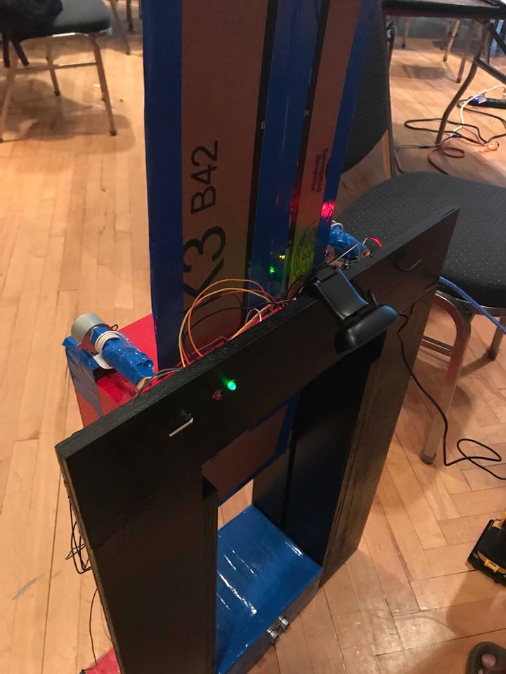

Mostofa Adib Shakib
Current Endeavors
- Founder & CEO at CSB : AI Career Coach; Cut Job Hunting from Months to Minutes
- Founder & CEO at Variant Technologies: Custom Software Agency; Cutting costs for SMEs with the use of AI
Past Endeavors
- Software Engineer II at ZipRecruiter : Engineering Lead for E2E UI Test Automation infrastructure from scratch
- Software Engineer at Snapchat : Engineering Lead to deliver the number 1 user-requested feature
- Founder & CEO at Promethium : Founded a blockchain DeFi payment startup with funding from the US Government
- Founder & President at at RaiderHacks Founded Texas Tech University’s first hackathon organization
- AI Researcher at Applied Vision Lab : Developed affordable unmanned vision system for early cotton yield analysis
- Founder & CEO at KurT's Steam Store : Founded Bangladesh's largest eSports eCommerce with 6000% ROI
Education
- Carnegie Mellon University - MSCS : Opted out from MSCS with focus in Scalable Systems & Artificial Intelligence
- Texas Tech University - CS, Math & EE : Graduated with Honors, 2 Bachelor Degrees, 2 Minors and 6 SWE internships
Notable Achievements
- Financed my US education during highschool with earnings from business and scholarships
- Organized Bangladesh's first international Hackathon with leaders from Google, and Microsoft
- 3x Hackathon Winner - Princeton University Hackathon Winner and Top 2% Hacker at UC Berkeley
- Country Highest Marks in Mathematics in Bangladesh
- O1A Visa Holder: Extraordinary Ability US Talent Visa
Social Impact
- Awarded over $8000 in scholarships & financial aid to ambitious students from developing countries
- Helped individuals secure over $4M+ in total annual compensation.
Affiliations
- Founder Fellow at OnDeck
- Global Fellow at AI2030
- Member of Forbes Business Council
- Venture Investor at GaingelsVC
- Venture Scout at Flashpoint Venture Capital
- Startup Mentor at Founder's Institute
- Startup Mentor at Texas Tech University's Innovation Hub
Projects
- AI Talent Manager: Get tailored brand recommendation & automate affiliate marketing
- AutoFlow: Voice-activated workflow automation assistant
Public Speaker
- Guest Speaker at Texas Tech University
- Guest Lecturer at Daffodil International University
Media Features & Podcasts
- Adib’s Path from Steam Trader to Silicon Valley USA Today
- Bootstrapping A Tech Startup? 20 Expert Tips For Finding Success Forbes
- From Bangladesh to Texas: Shakib and the Power of Hackathons Hackernoon
- Bangladesh’s tech sector energized by international hackathon Dhaka Tribune
- How a Bangladeshi hackathon is inspiring a generation The Financial Express
- Shakib's Unstoppable Journey Daily Manab Zamin
- HackCSB ignites innovation among Bangladesh’s tech students Bangladesh Post
- Interview with a Journalist CanvasRebel
- Interview with a Journalist BoldJourney
- Interview with a Journalist Under30CEO
Authored Articles
- Unexpected Catalyst For Innovation In Developing Nations Forbes
- Solve Visual Tracking with Self-Supervised Learning Hackernoon
- How to Get the Most Out of Your University Life as a Software Engineer Hackernoon
- Devin AI: End of Software Engineers or Just A Tool? Hackernoon
- Does OpenAI's Sora signal end of YouTubers? The Financial Express
- Unlocking Doors to Google & Facebook! Hackernoon
Gallery

Princeton University Hackathon Winner

Country Highest Marks in Mathematics

Top 2% Hacker at UC Berkeley

Best Web Design Award at Rice University